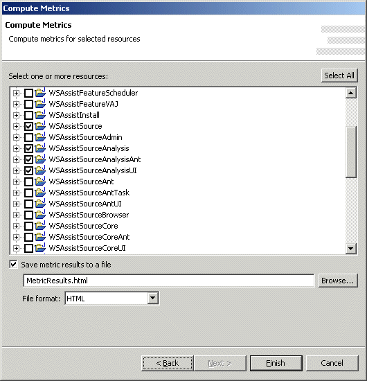

Export Set - Compute MetricsNote: this feature requires CodePro AnalytiX and CodePro PlusPak to be installed.  The "Compute Metrics" wizard page is used to create a code audit Ant task. The collection of resources that should be examined may be selected. Once the metrics results have been collected, the results may be written out to a report in a variety of formats including text, tab and comma delimited, HTML and XML. The results may also be grouped by audit rule or resource.. An codepro.metrics Ant task is used to record the options chosen and perform the operation as part of an Export Set. |